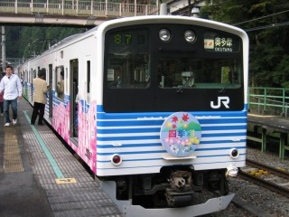

今年は5月中旬以降ずっといそがしくて、8月第一週以外はまともに休んでいないような気がする。そろそろハイキング・シーズンが終了してしまうため、山に行くことにする。いつも以上に直前まで仕事がいそがしくて、予定が全然たてられない。前日3日の祝日も出勤。とゆーわけで、お嫁さんのリクエストで鷹ノ巣山へ決定。行程がつらいので大丈夫かな～と思っていたら、その不安は見事に的中する(後述)。早めに家を出発することができたので、新宿からホリデー快速に乗るのはやめて東京から中央線のふつ～の快速に乗る。立川で車内アナウンスと構内アナウンスが食い違い(番線違い)、快速おくたまに乗れ遅れてしまう。
朝から大変に不愉快。駅員にどなりこもうかと思ったが、なぜか有人改札に人だかりができていたのでやめて、さっさと青梅線の次発に乗る。すると、青梅で先発していた快速おくたまに追いつく。んざそら。奥多摩駅からは、東日原行きのバスに乗る。終点の東日原から10分程歩くと、中日原のバス停。平日はこの先の鍾乳洞までバスが通っているため、バス停があるのだ。9:50に出発して、13:15に鷹ノ巣山の頂上に到着。3時間25分もかかった(3時間5分がコースタイム)。富士山がキレイに見えるはずなのだが、残念ながら雲の中。日没までに奥多摩駅までの下山が無理そうだったので、峰谷(みねだに)に下りることにする。
鷹ノ巣山避難小屋で、バスの時間が16:20であることを知る。これで我が家的には、その時間までに下山しないといけないことになってしまう。バスの時刻表を置いてくれた人には申し訳ないのだが、個人的には時間を気にせずに下山したかった。バスの発車は1時間50分後なのだが、コースタイムは1時間40分。若干急ぐが、車道に出てからもちっともバス停に着かない。競歩みたいな早足で、ギリギリ間に合う。どこまでが、1時間40分という計算だったんだ!? 奥多摩駅まで、バスで所要40分。17:00に、奥多摩駅に到着する。もう真っ暗ですぜ、旦那。今年のお山は、これが最後でせう。
 写真は、青梅から奥多摩まで乗った快速おくたま。ホリデー快速ではないので、青梅から先は各駅に停車する。撮影場所は、鳩ノ巣駅。列車交換のためしばらく停車するというので、ホームに出て撮影。他の乗客もホームに出ていた。こーゆーアナウンス(しばらく停車する云々)は、大変よろしい←えらそう。
PC(Cathy)の不調は続くよ、どこまでも。スクリーンセーバー: OFF、CRT電源: OFF。この状態で、マウスとキーボードが無反応の状態が発生してしまう。ということは、ビデオカード(ELSA GLADIAC 776 GS)が原因ではないのではないか? それとも、メモリがあやしいのか? ちなみに「システムのプロパティ」で「自動的に再起動する」のチェックがONになっていることを認識した上で、「勝手に再起動してしまう」と書いている。問題切り分けの時間なんてないので、そのまま放置。
外付HDDケースの玄蔵X4側のHDDで、エラーが多発する。一部見えていたファイルがあったりしたのだが、最終的にあとで観ようと思っていた動画ファイルが、すべて消失してしまった。玄人志向のBBSを読むと、基盤の発熱が原因で同様の現象が発生していた模様。2ちゃんねるを読むと、ファームウェアのバージョンを上げる必要があるらしいが本当か? チップの型番を調べるためには、ケースを開けないと……。でも、消えたファイルは二度と戻ってこないので、もういいや……。
父親から電話があり、実家の参号機(EVA-03)の電源が入らないという。電源ボタンを押すとファンの音が数秒して、電源が切れた状態に戻るらしい。ビープ音は鳴らない、とのこと。この症状は、電源またはM/B(マザーボード)が逝ってしまった可能性が高い。とりあへずCMOSクリアとダスト掃除をしてからだと思うのだが、それはスキル的に頼めないので電源ユニット持参で向かうことにする。アキバのFaithでOwltechの電源(400W)を購入して、新宿経由で実家に向かう。ところが、電源ボタンを長く押しすぎていたというオチだった。再び新宿に戻り、なぜかカキ鍋を食う。もう、おなかいっぱいです。で、この電源ユニットどうしよう……。
12日に、ビデオカードのデバドラを「ELSA Graphics Driver ver91.29」から「NVIDIA Display Driver ver93.71」にバージョンアップした。その後しばらく勝手な再起動もマウス＆キーボードの無反応も発生していなかったので、ビデオカードのデバドラが原因だったのではないかと思いはじめていた。ビデオカードのデバドラのバージョンが異なる場合に挙動(いきなり再起動の場合とマウス＆キーボードの無反応の場合)が異なっていたので、以前から疑ってはいた。しかし、夜中にいきなり再起動が発生。で、根本的な原因究明とは無関係と承知の上で「システムのプロパティ」から「自動的に再起動する」をOFFにする。
再び、画面が真っ暗になってマウスもキーボードも効かない現象が発生してしまう。「自動的に再起動する」をOFFにしたので、ブルースクリーンになってくれればなんらかの情報がとれるかも……という淡い期待は、もろくも崩れ去る。ここまで来ると、やはりデバドラがあやしい可能性が高いと思うのだが、ひとつひとつ検証していく時間がない。しくしく。